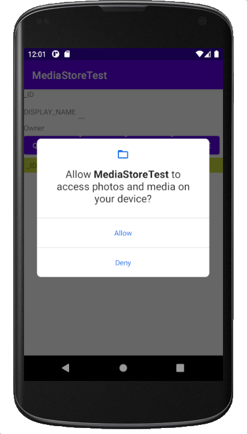

myfile.txt
는 디바이스의 data/data/com.example.kwanwoo.filetest/files/ 에 위치
Android Studio의 좌측 하단에 있는 Device File Explorer 탭을 열어 해당 파일이 생성되었는 지 확인 가능합니다.

모든 Android 기기에는 내부
및 외부
저장소의 두 가지 파일 저장소 영역이 있습니다.
| 내부 저장소 | 외부 저장소 |
|---|---|
| 내장 메모리 | 이동식 저장장치 (SD 카드) |
| 항상 사용 가능 | 외부 저장소의 마운트 여부에 따라 사용 가능 |
| 기본적으로 자신의 앱에서만 액세스 할 수 있음 | 모든 사람이 읽을 수 있음 |
| 사용자가 앱을 삭제하면 시스템이 내장 저장소에서 앱의 모든 파일을 제거함 | 사용자가 앱을 삭제하면 getExternalFilesDir()의 디렉터리에 저장한 앱 파일에 한해서 시스템이 제거함 |
| 사용자와 다른 앱이 앱의 파일에 직접 액세스하는 것을 원치 않을 때 적합 | 다음 경우에 적합
|
FileTest 안드로이드 프로젝트 Github 주소
안드로이드에서 자바의 모든 입출력 기능을 다 사용할 수 는 없고, 보안상의 제약으로 인해 Context 클래스에서 보안이 적용된 파일 관리 메서드를 별도로 제공하며, 이를 이용하여 파일을 Open한다.
FileOutputStream openFileOutput (String name, int mode)
FileInputStream openFileInput (String name)name
mode
| 모드 | 설명 |
|---|---|
| MODE_RPIVATE | 혼자만 사용하는 배타적인 모드로 파일을 생성. (디폴트) |
| MODE_APPEND | 파일이 이미 존재할 경우 덮어쓰기 모드가 아닌 추가 모드로 Open. |
package com.example.kwanwoo.filetest;
... 생략 ...
private void saveToInternalStorage() {
String data = input.getText().toString();
try {
FileOutputStream fos = openFileOutput
("myfile.txt", // 파일명 지정
Context.MODE_APPEND);// 저장모드
PrintWriter out = new PrintWriter(fos);
out.println(data);
out.close();
result.setText("file saved");
} catch (Exception e) {
result.setText("Exception: internal file writing");
}
}myfile.txt
는 디바이스의 data/data/com.example.kwanwoo.filetest/files/ 에 위치
Android Studio의 좌측 하단에 있는 Device File Explorer 탭을 열어 해당 파일이 생성되었는 지 확인 가능합니다.
private void loadFromIntenalStorage() {
try {
FileInputStream fis = openFileInput("myfile.txt");//파일명
BufferedReader buffer = new BufferedReader
(new InputStreamReader(fis));
String str = buffer.readLine(); // 파일에서 한줄을 읽어옴
// 파일에서 읽은 데이터를 저장하기 위해서 만든 변수
StringBuffer data = new StringBuffer();
while (str != null) {
data.append(str + "\n");
str = buffer.readLine();
}
buffer.close();
result.setText(data);
} catch (FileNotFoundException e) {
result.setText("File Not Found");
} catch (Exception e) {
result.setText("Exception: internal file reading");
}
}포함시킬 파일은 res/raw에 복사해 둔다

리소스의 파일을 읽을 때는 Resources 클래스의 openRawResource 메서드를 사용하며, id로는 확장자를 뺀 파일명을 부여한다.
InputStream openRawResource (int id) private void loadFromRawResource() {
try {
InputStream is = getResources().openRawResource(R.raw.description);
BufferedReader buffer = new BufferedReader
(new InputStreamReader(is));
String str = buffer.readLine(); // 파일에서 한줄을 읽어옴
// 파일에서 읽은 데이터를 저장하기 위해서 만든 변수
StringBuffer data = new StringBuffer();
while (str != null) {
data.append(str + "\n");
str = buffer.readLine();
}
buffer.close();
result.setText(data);
} catch (Exception e) {
result.setText("Exception: raw resource file reading");
}
}<manifest ...>
<uses-permission android:name="android.permission.WRITE_EXTERNAL_STORAGE"/>
</manifest>외부 저장소를 사용하기 전에 사용 가능성 검사
public boolean isExternalStorageWritable() {
String state = Environment.getExternalStorageState();
if (Environment.MEDIA_MOUNTED.equals(state)) {
result.setText("외부메모리 읽기 쓰기 모두 가능");
return true;
}
return false;
}Android 6.0 (API level 23) 이상부터는앱 실행 중에 사용하려는 권한(permission)을 반드시 요청 (참고자료: 런타임에 권한 요청)
여러분의 앱에 위험 권한이 필요한 경우, 여러분은 해당 권한이 요구되는 작업을 실행할 때마다 이 권한의 보유 여부를 확인해야 합니다.
여러분의 앱에 필요한 권한이 아직 없는 경우, 앱은 ActivityCompat.requestPermissions() 메서드를 호출하여 적절한 권한을 요청해야 합니다.
static void ActivityCompat.requestPermissions (Activity activity, String[] permissions, int requestCode)
requestCode: 사용자 정의 int 상수로서, onRequestPermissionsResult(int requestCode, String[] permissions, int[] grantResults)에 전달될 결과와 매칭하기 위해서 사용됨 .
// 사용자 정의 상수 선언
final int REQUEST_SAVETO_EXTERNAL_STORAGE = 1;
... 생략 ...
String[] PERMISSIONS_STORAGE = {
Manifest.permission.WRITE_EXTERNAL_STORAGE
};
if (ContextCompat.checkSelfPermission(MainActivity.this,
Manifest.permission.WRITE_EXTERNAL_STORAGE)
!= PackageManager.PERMISSION_GRANTED) { //권한이 없는 경우
ActivityCompat.requestPermissions(
MainActivity.this,
PERMISSIONS_STORAGE,
REQUEST_SAVETO_EXTERNAL_STORAGE
);
} else { // 권한이 이미 허가된 경우
saveToExtenalStorage();
}ActivityCompat.requestPermissions() 메서드가 호출되면 다음과 같은 대화상자가 나타나서, 앱 사용자는 권한의 승인/거부를 앱 실행 중에 결정할 수 있습니다.

사용자가 응답하면, 시스템은 앱의 onRequestPermissionsResult() 메서드를 호출하여 사용자 응답에 전달합니다.
public void onRequestPermissionsResult(int requestCode, String permissions[], int[] grantResults) {
if (grantResults.length > 0
&& grantResults[0] == PackageManager.PERMISSION_GRANTED) { // permission was granted
switch (requestCode) {
case REQUEST_SAVETO_EXTERNAL_STORAGE:
saveToExtenalStorage();
break;
...
}
} else { // permission was denied
Toast.makeText(getApplicationContext(),"접근 권한이 필요합니다",Toast.LENGTH_SHORT).show();
}
}
앱의 권한 설정은 설정>애플리케이션>[해당 앱]>권한에서 언제든지 변경할 수 있음


// 공유 디렉토리 (sdcard/Download) 사용할 경우
File path = Environment.getExternalStoragePublicDirectory
(Environment.DIRECTORY_DOWNLOADS);
File f = new File(path, "external.txt"); // 경로, 파일명
FileWriter write = new FileWriter(f, true); // 지정된 파일에 문자 스트림 쓰기
PrintWriter out = new PrintWriter(write); // formatted 출력 스트림
out.println(data);
out.close();// 앱 전용 저장소 (sdcard/Android/data/com.example.kwanwoo.filetest/files/Download를 사용할 경우
File path = getExternalFilesDir(Environment.DIRECTORY_DOWNLOADS);
File f = new File(path, "external.txt"); // 경로, 파일명
FileWriter write = new FileWriter(f, true); // 지정된 파일에 문자 스트림 쓰기
PrintWriter out = new PrintWriter(write); // formatted 출력 스트림
out.println(data);
out.close();